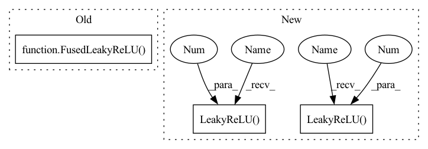

Pattern ID :1895

Before Change
EqualizedConv2d(
out_channels, out_channels, 3, padding=1, bias=False
),
FusedLeakyReLU(out_channels),
BlurDownsample()
)
self.down = nn.Sequential(
After Change
super().__init__()
layers = [
Conv2d("elr", in_channels, out_channels, 3, padding=1),
nn.LeakyReLU(0.2, inplace=True)
]
for _ in range(num_conv-1):
layers.extend([
Conv2d("elr", out_channels, out_channels, 3, padding=1),
nn.LeakyReLU(0.2, inplace=True)
])
self.block = nn.Sequential(*layers)
self.down = Downsample2x(down_name)
self.skip = Conv2d("elr", in_channels, out_channels, 1)
In pattern: SUPERPATTERN
Frequency: 3
Non-data size: 3
Instances
Fragment ID: 4699543
Project Name: stomoya/animeface
Commit Name: b3652bae109c713da926d5532eb014b02135da52
Time: 2020-12-14
Author: blackie0110@gmail.com
File Name: implementations/StyleGAN2/model.py
M Class Name: ResBlock
N Class Name: DBlock
M Method Name: __init__(5)
N Method Name: __init__(3)
M Parent Class: nn.Module
N Parent Class: nn.Module
M File Name: implementations/StyleGAN2/model.py
N File Name: implementations/StyleGAN2/model.py
M Start Line: 243
M End Line: 264
N Start Line: 186
N End Line: 201
'>
Before Change
EqualizedConv2d(
in_channels, out_channels, 3, padding=1, bias=False
),
FusedLeakyReLU(out_channels),
EqualizedConv2d(
out_channels, out_channels, 3, padding=1, bias=False
),
After Change
super().__init__()
layers = [
Conv2d("elr", in_channels, out_channels, 3, padding=1),
nn.LeakyReLU(0.2, inplace=True)
]
for _ in range(num_conv-1):
layers.extend([
Conv2d("elr", out_channels, out_channels, 3, padding=1),
nn.LeakyReLU(0.2, inplace=True)
])
self.block = nn.Sequential(*layers)
self.down = Downsample2x(down_name)
self.skip = Conv2d("elr", in_channels, out_channels, 1)
'>
Fragment ID: 4699542
Project Name: stomoya/animeface
Commit Name: b3652bae109c713da926d5532eb014b02135da52
Time: 2020-12-14
Author: blackie0110@gmail.com
File Name: implementations/StyleGAN2/model.py
M Class Name: ResBlock
N Class Name: DBlock
M Method Name: __init__(5)
N Method Name: __init__(3)
M Parent Class: nn.Module
N Parent Class: nn.Module
M File Name: implementations/StyleGAN2/model.py
N File Name: implementations/StyleGAN2/model.py
M Start Line: 243
M End Line: 264
N Start Line: 186
N End Line: 201
'>
Before Change
layers.append(MiniBatchStd())
layers += [
EqualizedConv2d(resl2ch[4]+1, resl2ch[4], 3, padding=1, bias=False),
FusedLeakyReLU(resl2ch[4]),
Flatten(),
EqualizedLinear(resl2ch[4]*4**2, resl2ch[4]),
FusedLeakyReLU(resl2ch[4]),
After Change
ochannels = channels
self.from_rgb = nn.Sequential(
Conv2d("elr", image_channels, ochannels, 1),
nn.LeakyReLU(0.2, inplace=True)
)
resl = image_size
blocks = []
while resl > 4:
resl = resl // 2
channels *= 2
ichannels, ochannels = ochannels, check_c(channels)
blocks.append(
DBlock(ichannels, ochannels, block_num_conv)
)
blocks.append(MiniBatchStdDev(mbsd_groups))
blocks.extend([
Conv2d("elr", ochannels+1, ochannels, 3, padding=1),
nn.LeakyReLU(0.2, inplace=True),
Flatten(),
Linear("elr", ochannels*(resl**2), ochannels),
nn.LeakyReLU(0.2, inplace=True),
Linear("elr", ochannels, 1)
])
self.blocks = nn.Sequential(*blocks)
'>
Fragment ID: 4699541
Project Name: stomoya/animeface
Commit Name: b3652bae109c713da926d5532eb014b02135da52
Time: 2020-12-14
Author: blackie0110@gmail.com
File Name: implementations/StyleGAN2/model.py
M Class Name: Discriminator
N Class Name: Discriminator
M Method Name: __init__(7)
N Method Name: __init__(1)
M Parent Class: nn.Module
N Parent Class: nn.Module
M File Name: implementations/StyleGAN2/model.py
N File Name: implementations/StyleGAN2/model.py
M Start Line: 354
M End Line: 387
N Start Line: 364
N End Line: 389
'>
Before Change
stride=stride, padding=padding, demod=True
)
self.scale_noise = ScaleNoise()
self.activation = FusedLeakyReLU(out_channels)
def forward(self, x, style, noise=None):
if self.upsample:
x = self.upsample(x)
After Change
Blur2d(),
ModulatedConv2d(in_channels, out_channels, style_dim, 3),
InjectNoise(),
nn.LeakyReLU(0.2, inplace=True)
])
for _ in range(num_conv-1):
self.block.extend([
ModulatedConv2d(out_channels, out_channels, style_dim, 3),
InjectNoise(),
nn.LeakyReLU(0.2, inplace=True)
])
def forward(self, x, y):
for module in self.block:
'>
Fragment ID: 4699548
Project Name: stomoya/animeface
Commit Name: b3652bae109c713da926d5532eb014b02135da52
Time: 2020-12-14
Author: blackie0110@gmail.com
File Name: implementations/StyleGAN2/model.py
M Class Name: StyleBlock
N Class Name: StyleBlock
M Method Name: __init__(6)
N Method Name: __init__(8)
M Parent Class: nn.Module
N Parent Class: nn.Module
M File Name: implementations/StyleGAN2/model.py
N File Name: implementations/StyleGAN2/model.py
M Start Line: 195
M End Line: 205
N Start Line: 155
N End Line: 171